Chapter 10: Cell Reproduction¶
Introduction¶
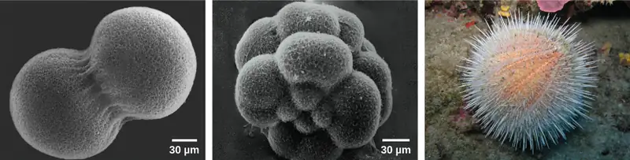
A human, like every sexually reproducing organism, begins life as a fertilized egg (embryo) or zygote. In our species, billions of cell divisions subsequently must occur in a controlled manner in order to produce a complex, multicellular human comprising trillions of cells. Thus, the original single-celled zygote is literally the ancestor of all cells in the body. However, once a human is fully grown, cell reproduction is still necessary to repair and regenerate tissues, and sometimes to increase our size! In fact, all multicellular organisms use cell division for growth and the maintenance and repair of cells and tissues. Cell division is closely regulated, and the occasional failure of this regulation can have life-threatening consequences. Single-celled organisms may also use cell division as their method of reproduction.
10.1 Cell Division¶
Learning Objectives
By the end of this section, you will be able to do the following:
- Describe the structure of prokaryotic and eukaryotic genomes
- Distinguish between chromosomes, genes, and traits
- Describe the mechanisms of chromosome compaction
The continuity of life from one cell to another has its foundation in the reproduction of cells by way of the cell cycle. The cell cycle is an orderly sequence of events that describes the stages of a cell’s life from the division of a single parent cell to the production of two new genetically identical daughter cells.
Genomic DNA¶
Before discussing the steps a cell must undertake to replicate and divide its DNA, a deeper understanding of the structure and function of a cell’s genetic information is necessary. A cell’s DNA, packaged as a double-stranded DNA molecule, is called its genome. In prokaryotes, the genome is composed of a single, double-stranded DNA molecule in the form of a loop or circle (Figure 10.2). The region in the cell containing this genetic material is called a nucleoid. Some prokaryotes also have smaller loops of DNA called plasmids that are not essential for normal growth. Bacteria can exchange these plasmids with other bacteria, sometimes receiving beneficial new genes that the recipient can add to their chromosomal DNA. Antibiotic resistance is one trait that often spreads through a bacterial colony through plasmid exchange from resistant donors to recipient cells.
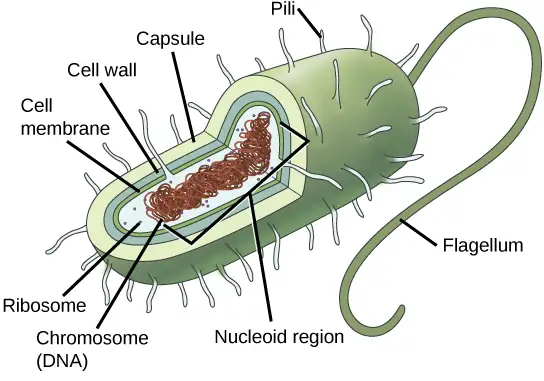
In eukaryotes, the genome consists of several double-stranded linear DNA molecules (Figure 10.3). Each species of eukaryotes has a characteristic number of chromosomes in the nuclei of its cells. Human body (somatic) cells have 46 chromosomes, while human gametes (sperm or eggs) have 23 chromosomes each. A typical body cell contains two matched or homologous sets of chromosomes (one set from each biological parent)—a configuration known as diploid. (Note: The letter n is used to represent a single set of chromosomes; therefore, a diploid organism is designated 2n.) Human cells that contain one set of chromosomes are called gametes, or sex cells; these are eggs and sperm, and are designated 1n, or haploid.
Upon fertilization, each gamete contributes one set of chromosomes, creating a diploid cell containing matched pairs of chromosomes called homologous (“same knowledge”) chromosomes. Homologous chromosomes are the same length and have specific nucleotide segments called genes in exactly the same location, or locus. Genes, the functional units of chromosomes, determine specific characteristics by coding for specific proteins. Traits are the variations of those characteristics. For example, hair color is a characteristic with traits that are blonde, brown, or black, and many colors in between.
![The 23 chromosomes from a human female are each dyed a different color so they can be distinguished. During most of the cell cycle, each chromosome is elongated into a thin strand that folds over on itself, like a piece of spaghetti. The chromosomes fill the entire spherical nucleus, but each one is contained in a different part, resulting in a multi-colored sphere. During mitosis, the chromosomes condense into thick, compact bars, each a different color. These bars can be arranged in numerical order to form a karyotype. There are two copies of each chromosome in the karyotype.](img/figure-10-01-02-1062.webp)
Each copy of a homologous pair of chromosomes originates from a different parent; therefore, the different genes (alleles) themselves are not identical, although they code for the same traits such as “hair color.” The variation of individuals within a species is due to the specific combination of the genes inherited from both parents. Even a slightly altered sequence of nucleotides within a gene can result in an alternative trait. For example, there are three possible gene sequences on the human chromosome that code for blood type: sequence A, sequence B, and sequence O. Because all diploid human cells have two copies of the chromosome that determines blood type, the blood type (the trait) is determined by the two alleles of the marker gene that are inherited. It is possible to have two copies of the same gene sequence on both homologous chromosomes, with one on each (for example, AA, BB, or OO), or two different sequences, such as AB, AO, or BO.
Apparently minor variations of traits, such as blood type, eye color, and handedness, contribute to the natural variation found within a species, but even though they seem minor, these traits may be connected with the expression of other traits as of yet unknown. However, if the entire DNA sequence from any pair of human homologous chromosomes is compared, the difference is much less than one percent. The sex chromosomes, X and Y, are the single exception to the rule of homologous chromosome uniformity: Other than a small amount of homology that is necessary to accurately produce gametes, the genes found on the X and Y chromosomes are different.
Eukaryotic Chromosomal Structure and Compaction¶
If the DNA from all 46 chromosomes in a human cell nucleus were laid out end-to-end, it would measure approximately two meters; however, its diameter would be only 2 nm! Considering that the size of a typical human cell is about 10 µm (100,000 cells lined up to equal one meter), DNA must be tightly packaged to fit in the cell’s nucleus. At the same time, it must also be readily accessible for the genes to be expressed. For this reason, the long strands of DNA are condensed into compact chromosomes during certain stages of the cell cycle. There are a number of ways that chromosomes are compacted.
In the first level of compaction, short stretches of the DNA double helix wrap around a core of eight histone proteins at regular intervals along the entire length of the chromosome (Figure 10.4). The DNA-histone complex is called chromatin. The beadlike, histone DNA complex is called a nucleosome, and DNA connecting the nucleosomes is called linker DNA. A DNA molecule in this form is about seven times shorter than the double helix without the histones, and the beads are about 10 nm in diameter, in contrast with the 2-nm diameter of a DNA double helix.
The second level of compaction occurs as the nucleosomes and the linker DNA between them coil into a 30-nm chromatin fiber. This coiling further condenses the chromosome so that it is now about 50 times shorter than the extended form.
In the third level of compaction, a variety of fibrous proteins is used to “pack the chromatin.” These fibrous proteins also ensure that each chromosome in a non-dividing cell occupies a particular area of the nucleus that does not overlap with that of any other chromosome (see the top image in Figure 10.3).
![A detail of a nucleosome shows 8 Histone proteins and 146 or 147 Nucleotide Base pairs; they are connected by a linker region to the Amino tail of the histone protein. Then, several levels of magnification reveal details of DNA. A D N A double helix is about 2 nanometers wide. The double helix wraps around proteins called histones to form nucleosomes. The entire D N A molecule wraps around many histones, creating the appearance of beads on a string in the radial loop domains and heterochromatin. The chromatin fiber further condenses into the chromosome at about 1400 nanometers wide.](img/figure-10-01-03-3c7b.webp)
DNA replicates in the S phase of interphase, which technically is not a part of mitosis, but must always precede it. After replication, the chromosomes are composed of two linked sister chromatids. When fully compact, the pairs of identically packed chromosomes are bound to each other by cohesin proteins. The connection between the sister chromatids is closest in a region called the centromere. The conjoined sister chromatids, with a diameter of about 1 µm, are visible under a light microscope. The centromeric region is highly condensed and thus will appear as a constricted area.
10.2 The Cell Cycle¶
Learning Objectives
By the end of this section, you will be able to do the following:
- Describe the three stages of interphase
- Discuss the behavior of chromosomes during karyokinesis/mitosis
- Explain how the cytoplasmic content is divided during cytokinesis
- Define the quiescent G0 phase
The cell cycle is an ordered series of events involving cell growth and cell division that produces two new daughter cells. Cells on the path to cell division proceed through a series of precisely timed and carefully regulated stages of growth, DNA replication, and nuclear and cytoplasmic division that ultimately produces two identical (clone) cells. The cell cycle has two major phases: interphase and the mitotic phase (Figure 10.5). During interphase, the cell grows and DNA is replicated. During the mitotic phase, the replicated DNA and cytoplasmic contents are separated, and the cell cytoplasm is typically partitioned by a third process of the cell cycle called cytokinesis. We should note, however, that interphase and mitosis (karyokinesis) may take place without cytokinesis, in which case cells with multiple nuclei (multinucleate cells) are produced.
![Like a clock, the cell cycles from interphase to the mitotic phase and back to interphase. Most of the cell cycle is spent in interphase, which is subdivided into G subscript 1 baseline, S, and G subscript 2 baseline phases. Cell growth occurs during G subscript 1 baseline, D N A synthesis occurs during S, and more growth occurs during G subscript 2 baseline. The mitotic phase consists of mitosis, in which the nuclear chromatin is divided, and cytokinesis, in which the cytoplasm is divided, resulting in two daughter cells.](img/figure-10-02-01-418e.webp)
Interphase¶
During interphase, the cell undergoes normal growth processes while also preparing for cell division. In order for a cell to move from interphase into the mitotic phase, many internal and external conditions must be met. The three stages of interphase are called G1, S, and G2.
G1 Phase (First Gap)¶
The first stage of interphase is called the G1 phase (first gap) because, from a microscopic point of view, little change is visible. However, during the G1 stage, the cell is quite active at the biochemical level. The cell is accumulating the building blocks of chromosomal DNA and the associated proteins as well as accumulating sufficient energy reserves to complete the task of replicating each chromosome in the nucleus.
S Phase (Synthesis of DNA)¶
Throughout interphase, nuclear DNA remains in a semi-condensed chromatin configuration. In the S phase, DNA replication can proceed through the mechanisms that result in the formation of identical pairs of DNA molecules—sister chromatids—that are firmly attached at the centromeric region. The centrosome is also duplicated during the S phase. The two centrosomes will give rise to the mitotic spindle, the apparatus that orchestrates the movement of chromosomes during mitosis. For example, roughly at the center of each animal cell, the centrosomes are associated with a pair of rod-like objects, the centrioles, which are positioned at right angles to each other. Centrioles help organize cell division. We should note, however, that centrioles are not present in the centrosomes of other eukaryotic organisms, such as plants and most fungi.
G2 Phase (Second Gap)¶
In the G2 phase, the cell replenishes its energy stores and synthesizes proteins necessary for chromosome manipulation and movement. Some cell organelles are duplicated, and the cytoskeleton is dismantled to provide resources for the mitotic phase. There may be additional cell growth during G2. The final preparations for the mitotic phase must be completed before the cell is able to enter the first stage of mitosis.
The Mitotic Phase¶
The mitotic phase is a multistep process during which the duplicated chromosomes are aligned, separated, and move into two new, identical daughter cells. The first portion of the mitotic phase is called karyokinesis, or nuclear division. As we have just seen, the second portion of the mitotic phase (and often viewed as a process separate from and following mitosis) is called cytokinesis—the physical separation of the cytoplasmic components into the two daughter cells.
Interactive
Revisit the stages of mitosis at this site.
Karyokinesis (Mitosis)¶
Karyokinesis, also known as mitosis, is divided into a series of phases—prophase, prometaphase, metaphase, anaphase, and telophase—that result in the division of the cell nucleus (Figure 10.6).
Visual Connection
![This diagram shows the five phases of mitosis and cytokinesis. During prophase, the chromosomes condense and become visible, spindle fibers emerge from the centrosomes, the nuclear envelope breaks down, and the nucleolus disappears. During prometaphase, the chromosomes continue to condense and kinetochores appear at the centromeres. Mitotic spindle microtubules attach to the kinetochores, and centrosomes move toward opposite poles. During metaphase, the mitotic spindle is fully developed, and centrosomes are at opposite poles of the cell. Chromosomes line up at the metaphase plate and each sister chromatid is attached to a spindle fiber originating from the opposite pole. During anaphase, the cohesin proteins that were binding the sister chromatids together break down. The sister chromatids, which are now called chromosomes, move toward opposite poles of the cell. Non-kinetochore spindle fibers lengthen, elongating the cell. During telophase, chromosomes arrive at the opposite poles and begin to decondense. The nuclear envelope reforms. During cytokinesis in animals, a cleavage furrow separates the two daughter cells. In plants, a cell plate separates the two cells.](img/figure-10-02-02-ae45.webp)
Mitosis - When G2 is complete, the cell will enter mitosis. Although there are 5 phases in mitosis, with the exception of the metaphase to anaphase transition, these phases are not discrete and happen as a continuous process. Prophase is the first stage in mitosis. The nuclear envelope begins to break down and chromosomes condense and are now visible. Spindle fibers start to appear and centrosomes begin to move towards opposite poles.
Prometaphase - Chromosomes continue to condense and are more visible. Kinetochores appear at the centromere and kinetochore microtubules attach. Centrosomes continue to move towards opposite poles.
Metaphase – The mitotic spindle is fully developed and centrosomes are at opposite poles. Chromosomes are aligned at the “equatorial plate”, and each sister chromatid rests on one side of the plate, with spindle fibers attached to them.
Anaphase - Sister chromatids are pulled apart by spindle fibers and are separated from each other. Each chromatid is now a chromosome.
Telophase and Cytokinesis - Chromosomes arrive at opposite poles and start to decondense and become less visible. The nuclear envelope reassembles and begins to surround each new set of chromosomes. The mitotic spindle assembly breaks down and the division of the cytoplasm begins via cytokinesis. This physical separation into two cells are remarkably different processes in plant and animal cells.
Credit: Rao, A., Hawkins, A.and Fletcher, S. Department of Biology, Texas A&M University.
Which of the following is the correct order of events in mitosis?
- Sister chromatids line up at the metaphase plate. The kinetochore becomes attached to the mitotic spindle. The nucleus reforms and the cell divides. Cohesin proteins break down and the sister chromatids separate.
- The kinetochore becomes attached to the mitotic spindle. Cohesin proteins break down and the sister chromatids separate. Sister chromatids line up at the metaphase plate. The nucleus reforms and the cell divides.
- The kinetochore becomes attached to the cohesin proteins. Sister chromatids line up at the metaphase plate. The kinetochore breaks down and the sister chromatids separate. The nucleus reforms and the cell divides.
- The kinetochore becomes attached to the mitotic spindle. Sister chromatids line up at the metaphase plate. Cohesin proteins break down and the sister chromatids separate. The nucleus reforms and the cell divides.
Prophase (the “first phase”): the nuclear envelope starts to dissociate into small vesicles, and the membranous organelles (such as the Golgi complex [Golgi apparatus] and the endoplasmic reticulum), fragment and disperse toward the periphery of the cell. The nucleolus disappears (disperses) as well, and the centrosomes begin to move to opposite poles of the cell. Microtubules that will form the mitotic spindle extend between the centrosomes, pushing them farther apart as the microtubule fibers lengthen. The sister chromatids begin to coil more tightly with the aid of condensin proteins and now become visible under a light microscope.
Prometaphase (the “first change phase”): Many processes that began in prophase continue to advance. The remnants of the nuclear envelope fragment further, and the mitotic spindle continues to develop as more microtubules assemble and stretch across the length of the former nuclear area. Chromosomes become even more condensed and discrete. Each sister chromatid develops a protein structure called a kinetochore in its centromeric region (Figure 10.7). The proteins of the kinetochore attract and bind to the mitotic spindle microtubules. As the spindle microtubules extend from the centrosomes, some of these microtubules come into contact with and firmly bind to the kinetochores. Once a mitotic fiber attaches to a chromosome, the chromosome will be oriented until the kinetochores of sister chromatids face the opposite poles. Eventually, all the sister chromatids will be attached via their kinetochores to microtubules from opposing poles. Spindle microtubules that do not engage the chromosomes are called polar microtubules. These microtubules overlap each other midway between the two poles and contribute to cell elongation. Astral microtubules are located near the poles, aid in spindle orientation, and are required for the regulation of mitosis.
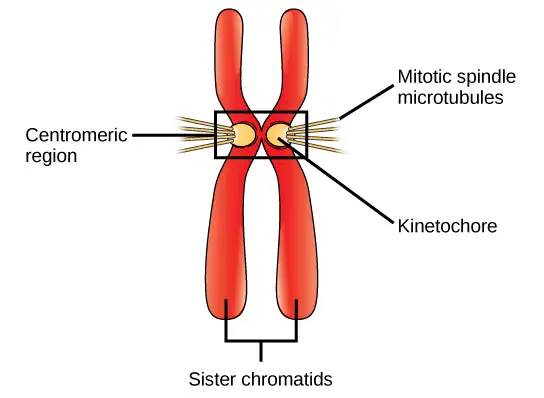
Metaphase (the “change phase”): All the chromosomes are aligned in a plane called the metaphase plate, or the equatorial plane, roughly midway between the two poles of the cell. The sister chromatids are still tightly attached to each other by cohesin proteins. At this time, the chromosomes are maximally condensed.
Anaphase (“upward phase”): The cohesin proteins degrade, and the sister chromatids separate at the centromere. Each chromatid, now called a single chromosome, is pulled rapidly toward the centrosome to which its microtubule is attached. The cell becomes visibly elongated (oval shaped) as the polar microtubules slide against each other at the metaphase plate where they overlap.
Telophase (the “distance phase”): the chromosomes reach the opposite poles and begin to decondense (unravel), relaxing once again into a stretched-out chromatin configuration. The mitotic spindles are depolymerized into tubulin monomers that will be used to assemble cytoskeletal components for each daughter cell. Nuclear envelopes form around the chromosomes, and nucleosomes appear within the nuclear area.
Cytokinesis¶
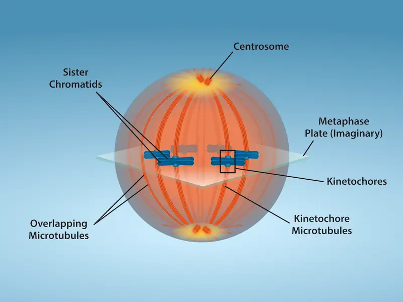
Cytokinesis, or “cell motion,” is sometimes viewed as the second main stage of the mitotic phase, during which cell division is completed via the physical separation of the cytoplasmic components into two daughter cells However, as we have seen earlier, cytokinesis can also be viewed as a separate phase, which may or may not take place following mitosis. If cytokinesis does take place, cell division is not complete until the cell components have been apportioned and completely separated into the two daughter cells. Although the stages of mitosis are similar for most eukaryotes, the process of cytokinesis is quite different for eukaryotes that have cell walls, such as plant cells.
In animal cells, cytokinesis typically starts during late anaphase. A contractile ring composed of actin filaments forms just inside the plasma membrane at the former metaphase plate. The actin filaments pull the equator of the cell inward, forming a fissure. This fissure is called the cleavage furrow. The furrow deepens as the actin ring contracts, and eventually the membrane is cleaved in two (Figure 10.9).
In plant cells, a new cell wall must form between the daughter cells. During interphase, the Golgi apparatus accumulates enzymes, structural proteins, and glucose molecules prior to breaking into vesicles and dispersing throughout the dividing cell. During telophase, these Golgi vesicles are transported on microtubules to form a phragmoplast (a vesicular structure) at the metaphase plate. There, the vesicles fuse and coalesce from the center toward the cell walls; this structure is called a cell plate. As more vesicles fuse, the cell plate enlarges until it merges with the cell walls at the periphery of the cell. Enzymes use the glucose that has accumulated between the membrane layers to build a new cell wall. The Golgi membranes become parts of the plasma membrane on either side of the new cell wall (Figure 10.9).
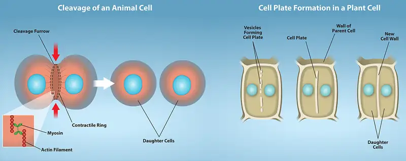
Plant cell wall formation - A mixture of enzymes, proteins, and glucose molecules are transported via vesicles to the center of the cell. These vesicles continuously build upon each other until a completely new cell wall has emerged and two new cells are formed, independent of one another.
Credit: Rao, A., Ryan, K., Hawkins, A.and Fletcher, S. Department of Biology, Texas A&M University.
G0 Phase¶
Not all cells adhere to the classic cell-cycle pattern in which a newly formed daughter cell immediately enters the preparatory phases of interphase, closely followed by the mitotic phase, and cytokinesis. Cells in G0 phase are not actively preparing to divide. The cell is in a quiescent (inactive) stage that occurs when cells exit the cell cycle. Some cells enter G0 temporarily due to environmental conditions such as availability of nutrients, or stimulation by growth factors. The cell will remain in this phase until conditions improve or until an external signal triggers the onset of G1. Other cells that never or rarely divide, such as mature cardiac muscle and nerve cells, remain in G0 permanently.
Scientific Method Connection
Determine the Time Spent in Cell-Cycle Stages
Problem: How long does a cell spend in interphase compared to each stage of mitosis?
Background: A prepared microscope slide of whitefish blastula cross-sections will show cells arrested in various stages of the cell cycle. (Note: It is not visually possible to separate the stages of interphase from each other, but the mitotic stages are readily identifiable.) If 100 cells are examined, the number of cells in each identifiable cell-cycle stage will give an estimate of the time it takes for the cell to complete that stage.
Problem Statement: Given the events included in all of interphase and those that take place in each stage of mitosis, estimate the length of each stage based on a 24-hour cell cycle. Before proceeding, state your hypothesis.
Test your hypothesis: Test your hypothesis by doing the following:
1. Place a fixed and stained microscope slide of whitefish blastula cross-sections under the scanning objective of a light microscope.
2. Locate and focus on one of the sections using the low-power objective of your microscope. Notice that the section is a circle composed of dozens of closely packed individual cells.
3. Switch to the medium-power objective and refocus. With this objective, individual cells are clearly visible, but the chromosomes will still be very small.
4. Switch to the high-power objective and slowly move the slide left to right, and up and down to view all the cells in the section (Figure 10.10). As you scan, you will notice that most of the cells are not undergoing mitosis but are in the interphase period of the cell cycle.
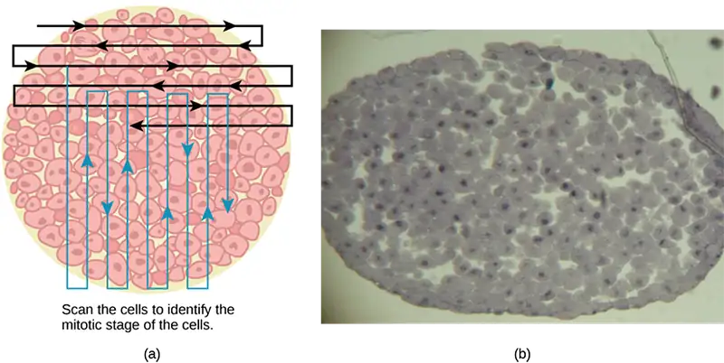
5. Practice identifying the various stages of the cell cycle, using the drawings of the stages as a guide (Figure 10.6).
6. Once you are confident about your identification, begin to record the stage of each cell you encounter as you scan left to right, and top to bottom across the blastula section.
7. Keep a tally of your observations and stop when you reach 100 cells identified.
8. The larger the sample size (total number of cells counted), the more accurate the results. If possible, gather and record group data prior to calculating percentages and making estimates.
Record your observations: Make a table similar to Table 10.1 within which to record your observations.
Table 10.1
| Results of Cell Stage Identification | |||
|---|---|---|---|
| Phase or Stage | Individual Totals | Group Totals | Percent |
| Interphase | |||
| Prophase | |||
| Metaphase | |||
| Anaphase | |||
| Telophase | |||
| Cytokinesis | |||
| Totals | 100 | 100 | 100 percent |
Analyze your data/report your results: To find the length of time whitefish blastula cells spend in each stage, multiply the percent (recorded as a decimal) by 24 hours. Make a table similar to Table 10.2 to illustrate your data.
Table 10.2
| Estimate of Cell Stage Length | ||
|---|---|---|
| Phase or Stage | Percent | Time in Hours |
| Interphase | ||
| Prophase | ||
| Metaphase | ||
| Anaphase | ||
| Telophase | ||
| Cytokinesis | ||
Draw a conclusion: Did your results support your estimated times? Were any of the outcomes unexpected? If so, discuss those events in that stage that may have contributed to the calculated time.
10.3 Control of the Cell Cycle¶
Learning Objectives
By the end of this section, you will be able to do the following:
- Understand how the cell cycle is controlled by mechanisms that are both internal and external to the cell
- Explain how the three internal “control checkpoints” occur at the end of G1, at the G2/M transition, and during metaphase
- Describe the molecules that control the cell cycle through positive and negative regulation
The length of the cell cycle is highly variable, even within the cells of a single organism. In humans, the frequency of cell turnover ranges from a few hours in early embryonic development, to an average of two to five days for epithelial cells, and to an entire human lifetime spent in G0 by specialized cells, such as cortical neurons or cardiac muscle cells.
There is also variation in the time that a cell spends in each phase of the cell cycle. When rapidly dividing mammalian cells are grown in a culture (outside the body under optimal growing conditions), the length of the cell cycle is about 24 hours. In rapidly dividing human cells with a 24-hour cell cycle, the G1 phase lasts approximately nine hours, the S phase lasts 10 hours, the G2 phase lasts about four and one-half hours, and the M phase lasts approximately one-half hour. By comparison, in fertilized eggs (and early embryos) of fruit flies, the cell cycle is completed in about eight minutes. This is because the nucleus of the fertilized egg divides many times by mitosis but does not go through cytokinesis until a multinucleate “zygote” has been produced, with many nuclei located along the periphery of the cell membrane, thereby shortening the time of the cell division cycle. The timing of events in the cell cycle of both “invertebrates” and “vertebrates” is controlled by mechanisms that are both internal and external to the cell.
Regulation of the Cell Cycle by External Events¶
Both the initiation and inhibition of cell division are triggered by events external to the cell when it is about to begin the replication process. An event may be as simple as the death of nearby cells or as sweeping as the release of growth-promoting hormones, such as human growth hormone (HGH or hGH). A lack of HGH can inhibit cell division, resulting in dwarfism, whereas too much HGH can result in gigantism. Crowding of cells can also inhibit cell division. In contrast, a factor that can initiate cell division is the size of the cell: As a cell grows, it becomes physiologically inefficient due to its decreasing surface-to-volume ratio. The solution to this problem is to divide.
Whatever the source of the message, the cell receives the signal, and a series of events within the cell allows it to proceed into interphase. Moving forward from this initiation point, every parameter required during each cell cycle phase must be met or the cycle cannot progress.
Regulation at Internal Checkpoints¶
It is essential that the daughter cells produced be exact duplicates of the parent cell. Mistakes in the duplication or distribution of the chromosomes lead to mutations that may be passed forward to every new cell produced from an abnormal cell. To prevent a compromised cell from continuing to divide, there are internal control mechanisms that operate at three main cell-cycle checkpoints: A checkpoint is one of several points in the eukaryotic cell cycle at which the progression of a cell to the next stage in the cycle can be halted until conditions are favorable. These checkpoints occur near the end of G1, at the G2/M transition, and during metaphase (Figure 10.11).
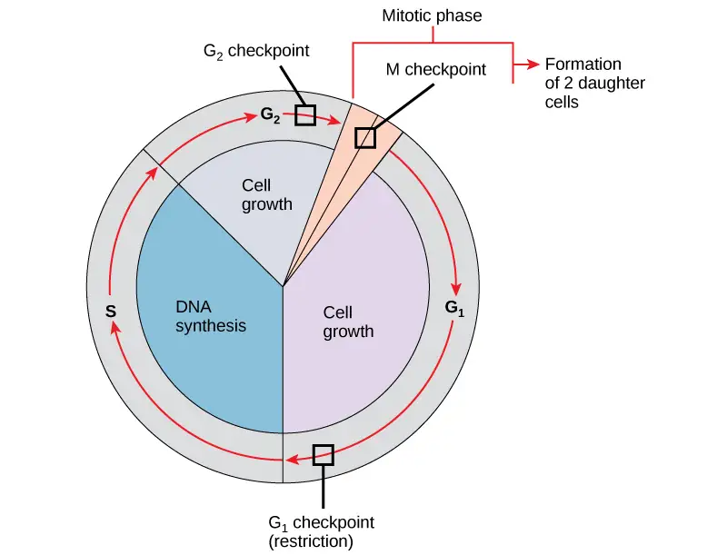
The G1 Checkpoint¶
The G1 checkpoint determines whether all conditions are favorable for cell division to proceed. The G1 checkpoint, also called the restriction point (in yeast), is a point at which the cell irreversibly commits to the cell division process. External influences, such as growth factors, play a large role in carrying the cell past the G1 checkpoint. In addition to adequate reserves and cell size, there is a check for genomic DNA damage at the G1 checkpoint. A cell that does not meet all the requirements will not be allowed to progress into the S phase. The cell can halt the cycle and attempt to remedy the problematic condition, or the cell can advance into G0 and await further signals when conditions improve.
The G2 Checkpoint¶
The G2 checkpoint bars entry into the mitotic phase if certain conditions are not met. As at the G1 checkpoint, cell size and protein reserves are assessed. However, the most important role of the G2 checkpoint is to ensure that all of the chromosomes have been replicated and that the replicated DNA is not damaged. If the checkpoint mechanisms detect problems with the DNA, the cell cycle is halted, and the cell attempts to either complete DNA replication or repair the damaged DNA.
The M Checkpoint¶
The M checkpoint occurs near the end of the metaphase stage of karyokinesis. The M checkpoint is also known as the spindle checkpoint, because it determines whether all the sister chromatids are correctly attached to the spindle microtubules. Because the separation of the sister chromatids during anaphase is an irreversible step, the cycle will not proceed until the kinetochores of each pair of sister chromatids are firmly anchored to at least two spindle fibers arising from opposite poles of the cell.
Interactive
Watch what occurs at the G1, G2, and M checkpoints by visiting this website to see an animation of the cell cycle.
Regulator Molecules of the Cell Cycle¶
In addition to the internally controlled checkpoints, there are two groups of intracellular molecules that regulate the cell cycle. These regulatory molecules either promote progress of the cell to the next phase (positive regulation) or halt the cycle (negative regulation). Regulator molecules may act individually, or they can influence the activity or production of other regulatory proteins. Therefore, the failure of a single regulator may have almost no effect on the cell cycle, especially if more than one mechanism controls the same event. However, the effect of a deficient or non-functioning regulator can be wide-ranging and possibly fatal to the cell if multiple processes are affected.
Positive Regulation of the Cell Cycle¶
Two groups of proteins, called cyclins and cyclin-dependent kinases (Cdks), are termed positive regulators. They are responsible for the progress of the cell through the various checkpoints. The levels of the four cyclin proteins fluctuate throughout the cell cycle in a predictable pattern (Figure 10.12). Increases in the concentration of cyclin proteins are triggered by both external and internal signals. After the cell moves to the next stage of the cell cycle, the cyclins that were active in the previous stage are degraded by cytoplasmic enzymes, as shown in Figure 10.12 below.
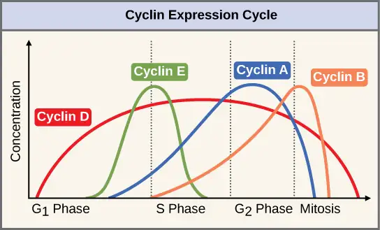
Cyclins regulate the cell cycle only when they are tightly bound to Cdks. To be fully active, the Cdk/cyclin complex must also be phosphorylated in specific locations to activate the complex. Like all kinases, Cdks are enzymes (kinases) that in turn phosphorylate other proteins. Phosphorylation activates the protein by changing its shape. The proteins phosphorylated by Cdks are involved in advancing the cell to the next phase. (Figure 10.13). The levels of Cdk proteins are relatively stable throughout the cell cycle; however, the concentrations of cyclin fluctuate and determine when Cdk/cyclin complexes form. The different cyclins and Cdks bind at specific points in the cell cycle and thus regulate different checkpoints.
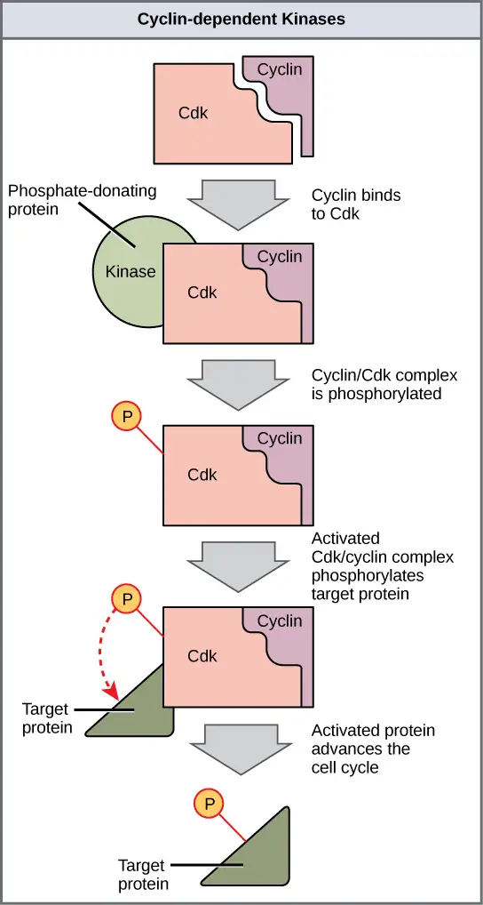
Because the cyclic fluctuations of cyclin levels are largely based on the timing of the cell cycle and not on specific events, regulation of the cell cycle usually occurs by either the Cdk molecules alone or the Cdk/cyclin complexes. Without a specific concentration of fully activated cyclin/Cdk complexes, the cell cycle cannot proceed through the checkpoints.
Although the cyclins are the main regulatory molecules that determine the forward momentum of the cell cycle, there are several other mechanisms that fine-tune the progress of the cycle with negative, rather than positive, effects. These mechanisms essentially block the progression of the cell cycle until problematic conditions are resolved. Molecules that prevent the full activation of Cdks are called Cdk inhibitors. Many of these inhibitor molecules directly or indirectly monitor a particular cell-cycle event. The block placed on Cdks by inhibitor molecules will not be removed until the specific event that the inhibitor monitors is completed.
Negative Regulation of the Cell Cycle¶
The second group of cell-cycle regulatory molecules are negative regulators, which stop the cell cycle. Remember that in positive regulation, active molecules cause the cycle to progress.
The best understood negative regulatory molecules are retinoblastoma protein (Rb), p53, and p21. Retinoblastoma proteins are a group of tumor-suppressor proteins common in many cells. We should note here that the 53 and 21 designations refer to the functional molecular masses of the proteins (p) in kilodaltons (a dalton is equal to an atomic mass unit, which is equal to one proton or one neutron or 1 g/mol). Much of what is known about cell-cycle regulation comes from research conducted with cells that have lost regulatory control. All three of these regulatory proteins were discovered to be damaged or non-functional in cells that had begun to replicate uncontrollably (i.e., became cancerous). In each case, the main cause of the unchecked progress through the cell cycle was a faulty copy of the regulatory protein.
Rb, p53, and p21 act primarily at the G1 checkpoint. p53 is a multi-functional protein that has a major impact on the commitment of a cell to division because it acts when there is damaged DNA in cells that are undergoing the preparatory processes during G1. If damaged DNA is detected, p53 halts the cell cycle and then recruits specific enzymes to repair the DNA. If the DNA cannot be repaired, p53 can trigger apoptosis, or cell suicide, to prevent the duplication of damaged chromosomes. As p53 levels rise, the production of p21 is triggered. p21 enforces the halt in the cycle dictated by p53 by binding to and inhibiting the activity of the Cdk/cyclin complexes. As a cell is exposed to more stress, higher levels of p53 and p21 accumulate, making it less likely that the cell will move into the S phase.
Rb, which largely monitors cell size, exerts its regulatory influence on other positive regulator proteins. In the active, dephosphorylated state, Rb binds to proteins called transcription factors, most commonly, E2F (Figure 10.14). Transcription factors “turn on” specific genes, allowing the production of proteins encoded by that gene. When Rb is bound to E2F, production of proteins necessary for the G1/S transition is blocked. As the cell increases in size, Rb is slowly phosphorylated until it becomes inactivated. Rb releases E2F, which can now turn on the gene that produces the transition protein, and this particular block is removed. For the cell to move past each of the checkpoints, all positive regulators must be “turned on,” and all negative regulators must be “turned off.”
Visual Connection
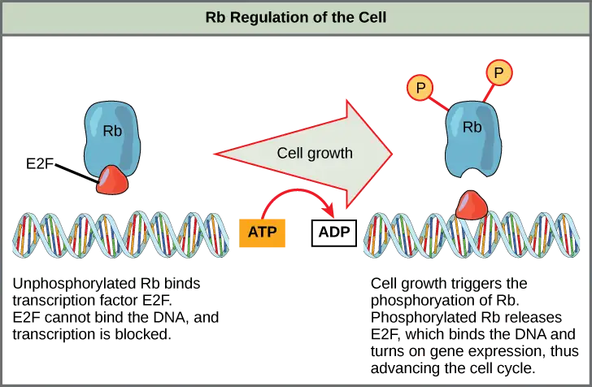
Rb and other proteins that negatively regulate the cell cycle are sometimes called tumor suppressors. Why do you think the name tumor suppressor might be appropriate for these proteins?
10.4 Cancer and the Cell Cycle¶
Learning Objectives
By the end of this section, you will be able to do the following:
- Describe how cancer is caused by uncontrolled cell growth
- Understand how proto-oncogenes are normal cell genes that, when mutated, become oncogenes
- Describe how tumor suppressors function
- Explain how mutant tumor suppressors cause cancer
Cancer comprises many different diseases caused by a common mechanism: uncontrolled cell growth. Despite the redundancy and overlapping levels of cell-cycle control, errors do occur. One of the critical processes monitored by the cell-cycle checkpoint surveillance mechanism is the proper replication of DNA during the S phase. Even when all of the cell-cycle controls are fully functional, a small percentage of replication errors (mutations) will be passed on to the daughter cells. If changes to the DNA nucleotide sequence occur within a coding portion of a gene and are not corrected, a gene mutation results. All cancers start when a gene mutation gives rise to a faulty protein that plays a key role in cell reproduction.
The change in the cell that results from the malformed protein may be minor: perhaps a slight delay in the binding of Cdk to cyclin or an Rb protein that detaches from its target DNA while still phosphorylated. Even minor mistakes, however, may allow subsequent mistakes to occur more readily. Over and over, small uncorrected errors are passed from the parent cell to the daughter cells and amplified as each generation produces more non-functional proteins from uncorrected DNA damage. Eventually, the pace of the cell cycle speeds up as the effectiveness of the control and repair mechanisms decreases. Uncontrolled growth of the mutated cells outpaces the growth of normal cells in the area, and a tumor (“-oma”) can result.
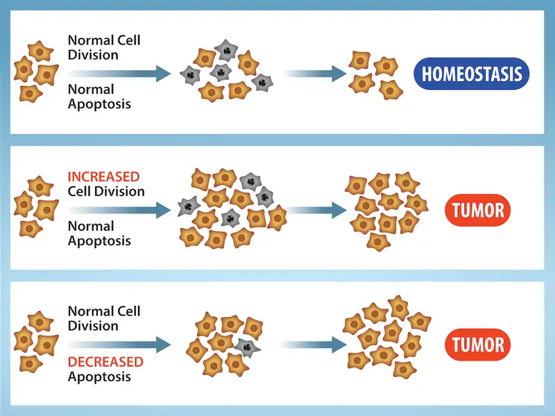
Proto-oncogenes¶
The genes that code for the positive cell-cycle regulators are called proto-oncogenes. Proto-oncogenes are normal genes that, when mutated in certain ways, become oncogenes—genes that cause a cell to become cancerous. Consider what might happen to the cell cycle in a cell with a recently acquired oncogene. In most instances, the alteration of the DNA sequence will result in a less functional (or non-functional) protein. The result is detrimental to the cell and will likely prevent the cell from completing the cell cycle; however, the organism is not harmed because the mutation will not be carried forward. If a cell cannot reproduce, the mutation is not propagated and the damage is minimal. Occasionally, however, a gene mutation causes a change that increases the activity of a positive regulator. For example, a mutation that allows Cdk to be activated without being partnered with cyclin could push the cell cycle past a checkpoint before all of the required conditions are met. If the resulting daughter cells are too damaged to undergo further cell divisions, the mutation would not be propagated and no harm would come to the organism. However, if the atypical daughter cells are able to undergo further cell divisions, subsequent generations of cells may accumulate even more mutations, some possibly in additional genes that regulate the cell cycle.
The Cdk gene in the above example is only one of many genes that are considered proto-oncogenes. In addition to the cell-cycle regulatory proteins, any protein that influences the cycle can be altered in such a way as to override cell-cycle checkpoints. An oncogene is any gene that, when altered, leads to an increase in the rate of cell-cycle progression.
Tumor Suppressor Genes¶
Like proto-oncogenes, many of the negative cell-cycle regulatory proteins were discovered in cells that had become cancerous. Tumor suppressor genes are segments of DNA that code for negative regulator proteins, the type of regulators that, when activated, can prevent the cell from undergoing uncontrolled division. The collective function of the best-understood tumor suppressor gene proteins, Rb, p53, and p21, is to put up a roadblock to cell-cycle progression until certain events are completed. A cell that carries a mutated form of a negative regulator might not be able to halt the cell cycle if there is a problem. Tumor suppressors are similar to brakes in a vehicle: Malfunctioning brakes can contribute to a car crash!
Mutated p53 genes have been identified in more than 50 percent of all human tumor cells. This discovery is not surprising in light of the multiple roles that the p53 protein plays at the G1 checkpoint. A cell with a faulty p53 may fail to detect errors present in the genomic DNA (Figure 10.16). Even if a partially functional p53 does identify the mutations, it may no longer be able to signal the necessary DNA repair enzymes. Either way, damaged DNA will remain uncorrected. At this point, a functional p53 will deem the cell unsalvageable and trigger programmed cell death (apoptosis). The damaged version of p53 found in cancer cells, however, cannot trigger apoptosis.
Visual Connection
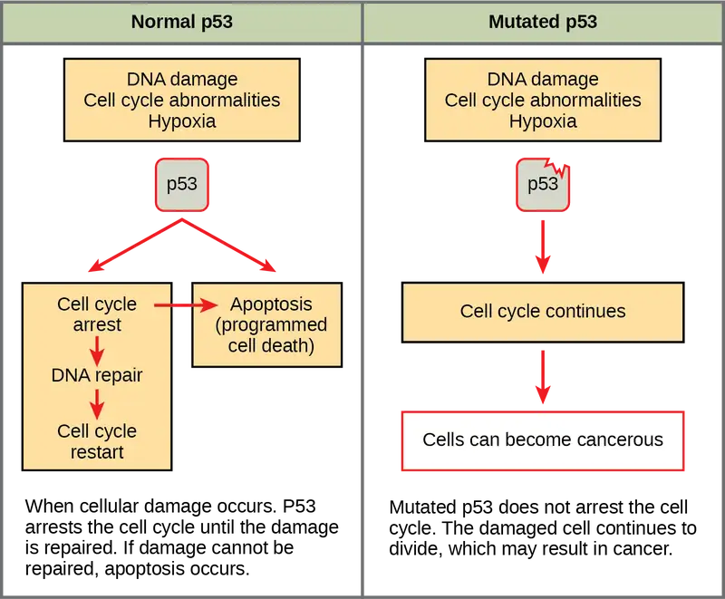
Human papillomavirus can cause cervical cancer. The virus encodes E6, a protein that binds p53. Based on this fact and what you know about p53, what effect do you think E6 binding has on p53 activity?
- E6 activates p53
- E6 inactivates p53
- E6 mutates p53
- E6 binding marks p53 for degradation
The loss of p53 function has other repercussions for the cell cycle. Mutated p53 might lose its ability to trigger p21 production. Without adequate levels of p21, there is no effective block on Cdk activation. Essentially, without a fully functional p53, the G1 checkpoint is severely compromised and the cell proceeds directly from G1 to S regardless of internal and external conditions. At the completion of this shortened cell cycle, two daughter cells are produced that have inherited the mutated p53 gene. Given the non-optimal conditions under which the parent cell reproduced, it is likely that the daughter cells will have acquired other mutations in addition to the faulty tumor-suppressor gene. Cells such as these daughter cells quickly accumulate both oncogenes and non-functional tumor-suppressor genes. Again, the result is tumor growth.
Interactive
Watch an animation of how cancer results from errors in the cell cycle. cancer
10.5 Prokaryotic Cell Division¶
Learning Objectives
By the end of this section, you will be able to do the following:
- Describe the process of binary fission in prokaryotes
- Explain how FtsZ and tubulin proteins are examples of homology
Prokaryotes, such as bacteria, produce daughter cells by binary fission. For unicellular organisms, cell division is the only method to produce new individuals. In both prokaryotic and eukaryotic cells, the outcome of cell reproduction is a pair of daughter cells that are genetically identical to the parent cell. In unicellular organisms, daughter cells are individuals.
To achieve the outcome of cloned offspring, certain steps are essential. The genomic DNA must be replicated and then allocated into the daughter cells; the cytoplasmic contents must also be divided to give both new cells the cellular machinery to sustain life. As we’ve seen with bacterial cells, the genome consists of a single, circular DNA chromosome; therefore, the process of cell division is simplified. Karyokinesis is unnecessary because there is no true nucleus and thus no need to direct one copy of the multiple chromosomes into each daughter cell. This type of cell division is called binary (prokaryotic) fission.
Binary Fission¶
Due to the relative simplicity of the prokaryotes, the cell division process is a less complicated and much more rapid process than cell division in eukaryotes. As a review of the general information on cell division we discussed at the beginning of this chapter, recall that the single, circular DNA chromosome of bacteria occupies a specific location, the nucleoid region, within the cell (Figure 10.2). Although the DNA of the nucleoid is associated with proteins that aid in packaging the molecule into a compact size, there are no histone proteins and thus no nucleosomes in prokaryotes. The packing proteins of bacteria are, however, related to the cohesin and condensin proteins involved in the chromosome compaction of eukaryotes.
The bacterial chromosome is attached to the plasma membrane at about the midpoint of the cell. The starting point of replication, the origin, is close to the binding site of the chromosome to the plasma membrane (Figure 10.17). Replication of the DNA is bidirectional, moving away from the origin on both strands of the loop simultaneously. As the new double strands are formed, each origin point moves away from the cell wall attachment toward the opposite ends of the cell. As the cell elongates, the growing membrane aids in the transport of the chromosomes. After the chromosomes have cleared the midpoint of the elongated cell, cytoplasmic separation begins. The formation of a ring composed of repeating units of a protein called FtsZ (short for “filamenting temperature-sensitive mutant Z”) directs the partition between the nucleoids. Formation of the FtsZ ring triggers the accumulation of other proteins that work together to recruit new membrane and cell wall materials to the site. A septum is formed between the daughter nucleoids, extending gradually from the periphery toward the center of the cell. When the new cell walls are in place, the daughter cells separate.
![This illustration shows the steps of binary fission in prokaryotes. Replication of the single, circular chromosome begins at the origin of replication and continues simultaneously in both directions. As the D N A is replicated, the cell elongates, and upper case F lower case t lower case s upper case Z proteins migrate toward the center of the cell where they form a ring. The upper F lower t lower s upper Z ring directs the formation of a septum that divides the cell in two once D N A replication is complete.](img/figure-10-05-01-2ecc.webp)
Evolution Connection: Mitotic Spindle Apparatus
The precise timing and formation of the mitotic spindle is critical to the success of eukaryotic cell division. Prokaryotic cells, on the other hand, do not undergo karyokinesis and therefore have no need for a mitotic spindle. However, the FtsZ protein that plays such a vital role in prokaryotic cytokinesis is structurally and functionally very similar to tubulin, the building block of the microtubules which make up the mitotic spindle fibers that are necessary for eukaryotic nuclear division. FtsZ proteins can form filaments, rings, and other three-dimensional structures that resemble the way tubulin forms microtubules, centrioles, and various cytoskeletal components. In addition, both FtsZ and tubulin employ the same energy source, GTP (guanosine triphosphate), to rapidly assemble and disassemble complex structures.
FtsZ and tubulin are considered to be homologous structures derived from common evolutionary origins. In this example, FtsZ is the ancestor protein to tubulin (an evolutionarily derived protein). While both proteins are found in extant organisms, tubulin function has evolved and diversified tremendously since evolving from its FtsZ prokaryotic origin. A survey of mitotic assembly components found in present-day unicellular eukaryotes reveals crucial intermediary steps to the complex membrane-enclosed genomes of multicellular eukaryotes (Table 10.3).
Table 10.3
| Cell Division Apparatus among Various Organisms | |||
|---|---|---|---|
| Structure of genetic material | Division of nuclear material | Separation of daughter cells | |
| Prokaryotes | There is no nucleus. The single, circular chromosome exists in a region of cytoplasm called the nucleoid. | Occurs through binary fission. As the chromosome is replicated, the two copies move to opposite ends of the cell by an unknown mechanism. | FtsZ proteins assemble into a ring that pinches the cell in two. |
| Some protists | Linear chromosomes exist in the nucleus. | Chromosomes attach to the nuclear envelope, which remains intact. The mitotic spindle passes through the envelope and elongates the cell. No centrioles exist. | Microfilaments form a cleavage furrow that pinches the cell in two. |
| Other protists | Linear chromosomes wrapped around histones exist in the nucleus. | A mitotic spindle forms from the centrioles and passes through the nuclear membrane, which remains intact. Chromosomes attach to the mitotic spindle, which separates the chromosomes and elongates the cell. | Microfilaments form a cleavage furrow that pinches the cell in two. |
| Animal cells | Linear chromosomes exist in the nucleus. | A mitotic spindle forms from the centrosomes. The nuclear envelope dissolves. Chromosomes attach to the mitotic spindle, which separates the chromosomes and elongates the cell. | Microfilaments form a cleavage furrow that pinches the cell in two. |
Chapter Review¶
Key Terms¶
- anaphase
- stage of mitosis during which sister chromatids are separated from each other
- binary fission
- prokaryotic cell division process
- cell cycle
- ordered series of events involving cell growth and cell division that produces two new daughter cells
- cell plate
- structure formed during plant cell cytokinesis by Golgi vesicles, forming a temporary structure (phragmoplast) and fusing at the metaphase plate; ultimately leads to the formation of cell walls that separate the two daughter cells
- cell-cycle checkpoint
- mechanism that monitors the preparedness of a eukaryotic cell to advance through the various cell-cycle stages
- centriole
- rod-like structure constructed of microtubules at the center of each animal cell centrosome
- centromere
- region at which sister chromatids are bound together; a constricted area in condensed chromosomes
- chromatid
- single DNA molecule of two strands of duplicated DNA and associated proteins held together at the centromere
- cleavage furrow
- constriction formed by an actin ring during cytokinesis in animal cells that leads to cytoplasmic division
- condensin
- proteins that help sister chromatids coil during prophase
- cyclin
- one of a group of proteins that act in conjunction with cyclin-dependent kinases to help regulate the cell cycle by phosphorylating key proteins; the concentrations of cyclins fluctuate throughout the cell cycle
- cyclin-dependent kinase (Cdk)
- one of a group of protein kinases that helps to regulate the cell cycle when bound to cyclin; it functions to phosphorylate other proteins that are either activated or inactivated by phosphorylation
- cytokinesis
- division of the cytoplasm following mitosis that forms two daughter cells.
- diploid
- cell, nucleus, or organism containing two sets of chromosomes (2n)
- FtsZ
- tubulin-like protein component of the prokaryotic cytoskeleton that is important in prokaryotic cytokinesis (name origin: Filamenting temperature-sensitive mutant Z)
- G0phase
- distinct from the G1 phase of interphase; a cell in G0 is not preparing to divide
- G1 phase
- (also, first gap) first phase of interphase centered on cell growth during mitosis
- G2 phase
- (also, second gap) third phase of interphase during which the cell undergoes final preparations for mitosis
- gamete
- haploid reproductive cell or sex cell (sperm, pollen grain, or egg)
- gene
- physical and functional unit of heredity, a sequence of DNA that codes for a protein.
- genome
- total genetic information of a cell or organism
- haploid
- cell, nucleus, or organism containing one set of chromosomes (n)
- histone
- one of several similar, highly conserved, low molecular weight, basic proteins found in the chromatin of all eukaryotic cells; associates with DNA to form nucleosomes
- homologous chromosomes
- chromosomes of the same morphology with genes in the same location; diploid organisms have pairs of homologous chromosomes (homologs), with each homolog derived from a different parent
- interphase
- period of the cell cycle leading up to mitosis; includes G1, S, and G2 phases (the interim period between two consecutive cell divisions)
- karyokinesis
- mitotic nuclear division
- kinetochore
- protein structure associated with the centromere of each sister chromatid that attracts and binds spindle microtubules during prometaphase
- locus
- position of a gene on a chromosome
- metaphase
- stage of mitosis during which chromosomes are aligned at the metaphase plate
- metaphase plate
- equatorial plane midway between the two poles of a cell where the chromosomes align during metaphase
- mitosis
- (also, karyokinesis) period of the cell cycle during which the duplicated chromosomes are separated into identical nuclei; includes prophase, prometaphase, metaphase, anaphase, and telophase
- mitotic phase
- period of the cell cycle during which duplicated chromosomes are distributed into two nuclei and cytoplasmic contents are divided; includes karyokinesis (mitosis) and cytokinesis
- mitotic spindle
- apparatus composed of microtubules that orchestrates the movement of chromosomes during mitosis
- nucleosome
- subunit of chromatin composed of a short length of DNA wrapped around a core of histone proteins
- oncogene
- mutated version of a normal gene involved in the positive regulation of the cell cycle
- origin
- (also, ORI) region of the prokaryotic chromosome where replication begins (origin of replication)
- p21
- cell-cycle regulatory protein that inhibits the cell cycle; its levels are controlled by p53
- p53
- cell-cycle regulatory protein that regulates cell growth and monitors DNA damage; it halts the progression of the cell cycle in cases of DNA damage and may induce apoptosis
- prometaphase
- stage of mitosis during which the nuclear membrane breaks down and mitotic spindle fibers attach to kinetochores
- prophase
- stage of mitosis during which chromosomes condense and the mitotic spindle begins to form
- proto-oncogene
- normal gene that when mutated becomes an oncogene
- quiescent
- refers to a cell that is performing normal cell functions and has not initiated preparations for cell division
- retinoblastoma protein (Rb)
- regulatory molecule that exhibits negative effects on the cell cycle by interacting with a transcription factor (E2F)
- S phase
- second, or synthesis, stage of interphase during which DNA replication occurs
- septum
- structure formed in a bacterial cell as a precursor to the separation of the cell into two daughter cells
- telophase
- stage of mitosis during which chromosomes arrive at opposite poles, decondense, and are surrounded by a new nuclear envelope
- tumor suppressor gene
- segment of DNA that codes for regulator proteins that prevent the cell from undergoing uncontrolled division
Summary¶
10.1 Cell Division¶
Prokaryotes have a single circular chromosome composed of double-stranded DNA, whereas eukaryotes have multiple, linear chromosomes composed of chromatin wrapped around histones, all of which are surrounded by a nuclear membrane. The 46 chromosomes of human somatic cells are composed of 22 pairs of autosomes (matched pairs) and a pair of sex chromosomes, which may or may not be matched. This is the 2n or diploid state. Human gametes have 23 chromosomes, or one complete set of chromosomes; a set of chromosomes is complete with either one of the sex chromosomes, X or Y. This is the n or haploid state. Genes are segments of DNA that code for a specific functional molecule (a protein or RNA). An organism’s traits are determined by the genes inherited from each parent. Duplicated chromosomes are composed of two sister chromatids. Chromosomes are compacted using a variety of mechanisms during certain stages of the cell cycle. Several classes of protein are involved in the organization and packing of the chromosomal DNA into a highly condensed structure. The condensing complex compacts chromosomes, and the resulting condensed structure is necessary for chromosomal segregation during mitosis.
10.2 The Cell Cycle¶
The cell cycle is an orderly sequence of events. Cells on the path to cell division proceed through a series of precisely timed and carefully regulated stages. In eukaryotes, the cell cycle consists of a long preparatory period, called interphase, during which chromosomes are replicated. Interphase is divided into G1, S, and G2 phases. The mitotic phase begins with karyokinesis (mitosis), which consists of five stages: prophase, prometaphase, metaphase, anaphase, and telophase. The final stage of the cell division process, and sometimes viewed as the final stage of the mitotic phase, is cytokinesis, during which the cytoplasmic components of the daughter cells are separated either by an actin ring (animal cells) or by cell plate formation (plant cells).
10.3 Control of the Cell Cycle¶
Each step of the cell cycle is monitored by internal controls called checkpoints. There are three major checkpoints in the cell cycle: one near the end of G1, a second at the G2/M transition, and the third during metaphase. Positive regulator molecules allow the cell cycle to advance to the next stage of cell division. Negative regulator molecules monitor cellular conditions and can halt the cycle until specific requirements are met.
10.4 Cancer and the Cell Cycle¶
Cancer is the result of unchecked cell division caused by a breakdown of the mechanisms that regulate the cell cycle. The loss of control begins with a change in the DNA sequence of a gene that codes for one of the regulatory molecules. Faulty instructions lead to a protein that does not function as it should. Any disruption of the monitoring system can allow other mistakes to be passed on to the daughter cells. Each successive cell division will give rise to daughter cells with even more accumulated damage. Eventually, all checkpoints become nonfunctional, and rapidly reproducing cells crowd out normal cells, resulting in a tumor or leukemia (blood cancer).
10.5 Prokaryotic Cell Division¶
In both prokaryotic and eukaryotic cell division, the genomic DNA is replicated and then each copy is allocated into a daughter cell. In addition, the cytoplasmic contents are divided evenly and distributed to the new cells. However, there are many differences between prokaryotic and eukaryotic cell division. Bacteria have a single, circular DNA chromosome but no nucleus. Therefore, mitosis (karyokinesis) is not necessary in bacterial cell division. Bacterial cytokinesis is directed by a ring composed of a protein called FtsZ. Ingrowth of membrane and cell wall material from the periphery of the cells results in the formation of a septum that eventually constructs the separate cell walls of the daughter cells.
Review Questions¶
10.1 Cell Division¶
1. A diploid cell has_______ the number of chromosomes as a haploid cell.
- one-fourth
- half
- twice
- four times
Answer
B
2. An organism’s traits are determined by the specific combination of inherited _____.
- cells.
- genes.
- proteins.
- chromatids.
Answer
B
3. The first level of DNA organization in a eukaryotic cell is maintained by which molecule?
- cohesin
- condensin
- chromatin
- histone
Answer
D
4. Identical copies of chromatin held together by cohesin at the centromere are called _____.
- histones.
- nucleosomes.
- chromatin.
- sister chromatids.
Answer
D
10.2 The Cell Cycle¶
5. Chromosomes are duplicated during what stage of the cell cycle?
- G1 phase
- S phase
- prophase
- prometaphase
Answer
B
6. Which of the following events does not occur during some stages of interphase?
- DNA duplication
- organelle duplication
- increase in cell size
- separation of sister chromatids
Answer
D
7. The mitotic spindles arise from which cell structure?
- centromere
- centrosome
- kinetochore
- cleavage furrow
Answer
B
8. Attachment of the mitotic spindle fibers to the kinetochores is a characteristic of which stage of mitosis?
- prophase
- prometaphase
- metaphase
- anaphase
Answer
B
9. Unpacking of chromosomes and the formation of a new nuclear envelope is a characteristic of which stage of mitosis?
- prometaphase
- metaphase
- anaphase
- telophase
Answer
D
10. Separation of the sister chromatids is a characteristic of which stage of mitosis?
- prometaphase
- metaphase
- anaphase
- telophase
Answer
C
11. The chromosomes become visible under a light microscope during which stage of mitosis?
- prophase
- prometaphase
- metaphase
- anaphase
Answer
A
12. The fusing of Golgi vesicles at the metaphase plate of dividing plant cells forms what structure?
- cell plate
- actin ring
- cleavage furrow
- mitotic spindle
Answer
A
13. Figure 10.6 Which of the following is the correct order of events in mitosis?
- Sister chromatids line up at the metaphase plate. The kinetochore becomes attached to the mitotic spindle. The nucleus reforms and the cell divides. Cohesin proteins break down and the sister chromatids separate.
- The kinetochore becomes attached to the mitotic spindle. Cohesin proteins break down and the sister chromatids separate. Sister chromatids line up at the metaphase plate. The nucleus reforms and the cell divides.
- The kinetochore becomes attached to the cohesin proteins. Sister chromatids line up at the metaphase plate. The kinetochore breaks down and the sister chromatids separate. The nucleus reforms and the cell divides.
- The kinetochore becomes attached to the mitotic spindle. Sister chromatids line up at the metaphase plate. Cohesin proteins break down and the sister chromatids separate. The nucleus reforms and the cell divides.
Answer
Figure 10.6 D. The kinetochore becomes attached to the mitotic spindle. Sister chromatids line up at the metaphase plate. Cohesin proteins break down and the sister chromatids separate. The nucleus reforms and the cell divides.
10.3 Control of the Cell Cycle¶
14. At which of the cell-cycle checkpoints do external forces have the greatest influence?
- G1 checkpoint
- G2 checkpoint
- M checkpoint
- G0 checkpoint
Answer
A
15. What is the main prerequisite for clearance at the G2 checkpoint?
- cell has reached a sufficient size
- an adequate stockpile of nucleotides
- accurate and complete DNA replication
- proper attachment of mitotic spindle fibers to kinetochores
Answer
C
16. If the M checkpoint is not cleared, what stage of mitosis will be blocked?
- prophase
- prometaphase
- metaphase
- anaphase
Answer
D
17. Which protein is a positive regulator that phosphorylates other proteins when activated?
- p53
- retinoblastoma protein (Rb)
- cyclin
- cyclin-dependent kinase (Cdk)
Answer
D
18. Many of the negative regulator proteins of the cell cycle were discovered in what type of cells?
- gametes
- cells in G0
- cancer cells
- stem cells
Answer
C
19. Which negative regulatory molecule can trigger cell suicide (apoptosis) if vital cell cycle events do not occur?
- p53
- p21
- retinoblastoma protein (Rb)
- cyclin-dependent kinase (Cdk)
Answer
A
10.4 Cancer and the Cell Cycle¶
20. ___________ are changes to the order of nucleotides in a segment of DNA that codes for a protein.
- Proto-oncogenes
- Tumor suppressor genes
- Gene mutations
- Negative regulators
Answer
C
21. A gene that codes for a positive cell-cycle regulator is called a(n) _____.
- kinase inhibitor.
- tumor suppressor gene.
- proto-oncogene.
- oncogene.
Answer
C
22. A mutated gene that codes for an altered version of Cdk that is active in the absence of cyclin is a(n) _____.
- kinase inhibitor.
- tumor suppressor gene.
- proto-oncogene.
- oncogene.
Answer
D
23. Which molecule is a Cdk inhibitor that is controlled by p53?
- cyclin
- anti-kinase
- Rb
- p21
Answer
D
10.5 Prokaryotic Cell Division¶
24. Which eukaryotic cell-cycle event is missing in binary fission?
- cell growth
- DNA duplication
- karyokinesis
- cytokinesis
Answer
C
25. FtsZ proteins direct the formation of a _______ that will eventually form the new cell walls of the daughter cells.
- contractile ring
- cell plate
- cytoskeleton
- septum
Answer
B
Critical Thinking Questions¶
10.1 Cell Division¶
26. Compare and contrast a human somatic cell to a human gamete.
Answer
Human somatic cells have 46 chromosomes: 22 pairs and 2 sex chromosomes that may or may not form a pair. This is the 2n or diploid condition. Human gametes have 23 chromosomes, one each of 23 unique chromosomes, one of which is a sex chromosome. This is the n or haploid condition.
27. What is the relationship between a genome, chromosomes, and genes?
Answer
The genome consists of the sum total of an organism’s chromosomes. Each chromosome contains hundreds and sometimes thousands of genes, segments of DNA that code for a polypeptide or RNA, and a large amount of DNA with no known function.
28. Eukaryotic chromosomes are thousands of times longer than a typical cell. Explain how chromosomes can fit inside a eukaryotic nucleus.
Answer
The DNA double helix is wrapped around histone proteins to form structures called nucleosomes. Nucleosomes and the linker DNA in between them are coiled into a 30-nm fiber. During cell division, chromatin is further condensed by packing proteins.
10.2 The Cell Cycle¶
29. Briefly describe the events that occur in each phase of interphase.
Answer
During G1, the cell increases in size, the genomic DNA is assessed for damage, and the cell stockpiles energy reserves and the components to synthesize DNA. During the S phase, the chromosomes, the centrosomes, and the centrioles (animal cells) duplicate. During the G2 phase, the cell recovers from the S phase, continues to grow, duplicates some organelles, and dismantles other organelles.
30. Chemotherapy drugs such as vincristine (derived from Madagascar periwinkle plants) and colchicine (derived from autumn crocus plants) disrupt mitosis by binding to tubulin (the subunit of microtubules) and interfering with microtubule assembly and disassembly. Exactly what mitotic structure is targeted by these drugs and what effect would that have on cell division?
Answer
The mitotic spindle is formed of microtubules. Microtubules are polymers of the protein tubulin; therefore, it is the mitotic spindle that is disrupted by these drugs. Without a functional mitotic spindle, the chromosomes will not be sorted or separated during mitosis. The cell will arrest in mitosis and die.
31. Describe the similarities and differences between the cytokinesis mechanisms found in animal cells versus those in plant cells.
Answer
There are very few similarities between animal cell and plant cell cytokinesis. In animal cells, a ring of actin fibers is formed around the periphery of the cell at the former metaphase plate (cleavage furrow). The actin ring contracts inward, pulling the plasma membrane toward the center of the cell until the cell is pinched in two. In plant cells, a new cell wall must be formed between the daughter cells. Due to the rigid cell walls of the parent cell, contraction of the middle of the cell is not possible. Instead, a phragmoplast first forms. Subsequently, a cell plate is formed in the center of the cell at the former metaphase plate. The cell plate is formed from Golgi vesicles that contain enzymes, proteins, and glucose. The vesicles fuse and the enzymes build a new cell wall from the proteins and glucose. The cell plate grows toward and eventually fuses with the cell wall of the parent cell.
32. List some reasons why a cell that has just completed cytokinesis might enter the G0 phase instead of the G1 phase.
Answer
Many cells temporarily enter G0 until they reach maturity. Some cells are only triggered to enter G1 when the organism needs to increase that particular cell type. Some cells only reproduce following an injury to the tissue. Some cells never divide once they reach maturity.
33. What cell-cycle events will be affected in a cell that produces mutated (non-functional) cohesin protein?
Answer
If cohesin is not functional, chromosomes are not packaged after DNA replication in the S phase of interphase. It is likely that the proteins of the centromeric region, such as the kinetochore, would not form. Even if the mitotic spindle fibers could attach to the chromatids without packing, the chromosomes would not be sorted or separated during mitosis.
10.3 Control of the Cell Cycle¶
34. Describe the general conditions that must be met at each of the three main cell-cycle checkpoints.
Answer
The G1 checkpoint monitors adequate cell growth, the state of the genomic DNA, adequate stores of energy, and materials for S phase. At the G2 checkpoint, DNA is checked to ensure that all chromosomes were duplicated and that there are no mistakes in newly synthesized DNA. Additionally, cell size and energy reserves are evaluated. The M checkpoint confirms the correct attachment of the mitotic spindle fibers to the kinetochores.
35. Compare and contrast the roles of the positive cell-cycle regulators negative regulators.
Answer
Positive cell regulators such as cyclin and Cdk perform tasks that advance the cell cycle to the next stage. Negative regulators such as Rb, p53, and p21 block the progression of the cell cycle until certain events have occurred.
36. What steps are necessary for Cdk to become fully active?
Answer
Cdk must bind to a cyclin, and it must be phosphorylated in the correct position to become fully active.
37. Rb is a negative regulator that blocks the cell cycle at the G1 checkpoint until the cell achieves a requisite size. What molecular mechanism does Rb employ to halt the cell cycle?
Answer
Rb is active when it is dephosphorylated. In this state, Rb binds to E2F, which is a transcription factor required for the transcription and eventual translation of molecules required for the G1/S transition. E2F cannot transcribe certain genes when it is bound to Rb. As the cell increases in size, Rb becomes phosphorylated, inactivated, and releases E2F. E2F can then promote the transcription of the genes it controls, and the transition proteins will be produced.
10.4 Cancer and the Cell Cycle¶
38. Outline the steps that lead to a cell becoming cancerous.
Answer
If one of the genes that produces regulator proteins becomes mutated, it produces a malformed, possibly non-functional, cell-cycle regulator, increasing the chance that more mutations will be left unrepaired in the cell. Each subsequent generation of cells sustains more damage. The cell cycle can speed up as a result of the loss of functional checkpoint proteins. The cells can lose the ability to self-destruct and eventually become “immortalized.”
39. Explain the difference between a proto-oncogene and a tumor-suppressor gene.
Answer
A proto-oncogene is a segment of DNA that codes for one of the positive cell cycle regulators. If that gene becomes mutated so that it produces a hyperactivated protein product, it is considered an oncogene. A tumor suppressor gene is a segment of DNA that codes for one of the negative cell cycle regulators. If that gene becomes mutated so that the protein product becomes less active, the cell cycle will run unchecked. A single oncogene can initiate abnormal cell divisions; however, tumor suppressors lose their effectiveness only when both copies of the gene are damaged.
40. List the regulatory mechanisms that might be lost in a cell producing faulty p53.
Answer
Regulatory mechanisms that might be lost include monitoring of the quality of the genomic DNA, recruiting of repair enzymes, and the triggering of apoptosis.
41. p53 can trigger apoptosis if certain cell-cycle events fail. How does this regulatory outcome benefit a multicellular organism?
Answer
If a cell has damaged DNA, the likelihood of producing faulty proteins is higher. The daughter cells of such a damaged parent cell would also produce faulty proteins that might eventually become cancerous. If p53 recognizes this damage and triggers the cell to self-destruct, the damaged DNA is degraded and recycled. No further harm comes to the organism. Another healthy cell is triggered to divide instead.
10.5 Prokaryotic Cell Division¶
42. Name the common components of eukaryotic cell division and binary fission.
Answer
The common components of eukaryotic cell division and binary fission are DNA duplication, segregation of duplicated chromosomes, and division of the cytoplasmic contents.
43. Describe how the duplicated bacterial chromosomes are distributed into new daughter cells without the direction of the mitotic spindle.
Answer
As the chromosome is being duplicated, each origin moves away from the starting point of replication. The chromosomes are attached to the cell membrane via proteins; the growth of the membrane as the cell elongates aids in their movement.
Visual Connection Questions¶
10.3 Control of the Cell Cycle¶
44. Figure 10.14 Rb and other proteins that negatively regulate the cell cycle are sometimes called tumor suppressors. Why do you think the name tumor suppressor might be appropriate for these proteins?
Answer
Figure 10.14 Rb and other negative regulatory proteins control cell division and therefore prevent the formation of tumors. Mutations that prevent these proteins from carrying out their function can result in cancer.
10.4 Cancer and the Cell Cycle¶
45. Figure 10.16 Human papillomavirus can cause cervical cancer. The virus encodes E6, a protein that binds p53. Based on this fact and what you know about p53, what effect do you think E6 binding has on p53 activity?
- E6 activates p53
- E6 inactivates p53
- E6 mutates p53
- E6 binding marks p53 for degradation
Answer
Figure 10.16 D. E6 binding marks p53 for degradation.
Adapted from Biology 2e by OpenStax, licensed under CC BY 4.0. Access the original for free at openstax.org. Changes: converted to the web reading format of The Open Book Project.